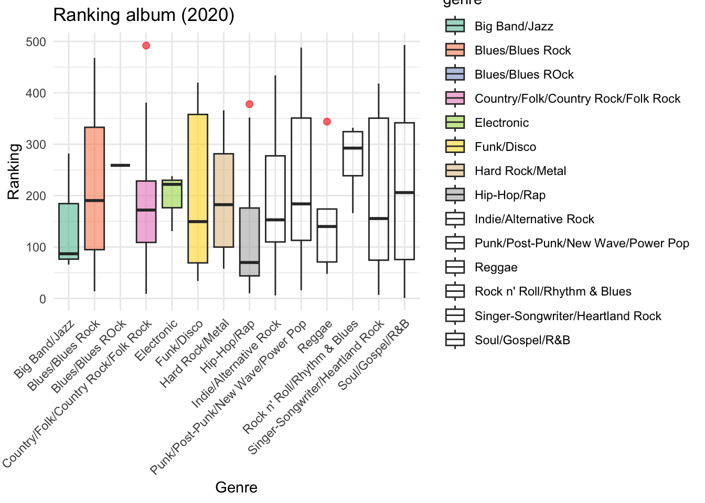
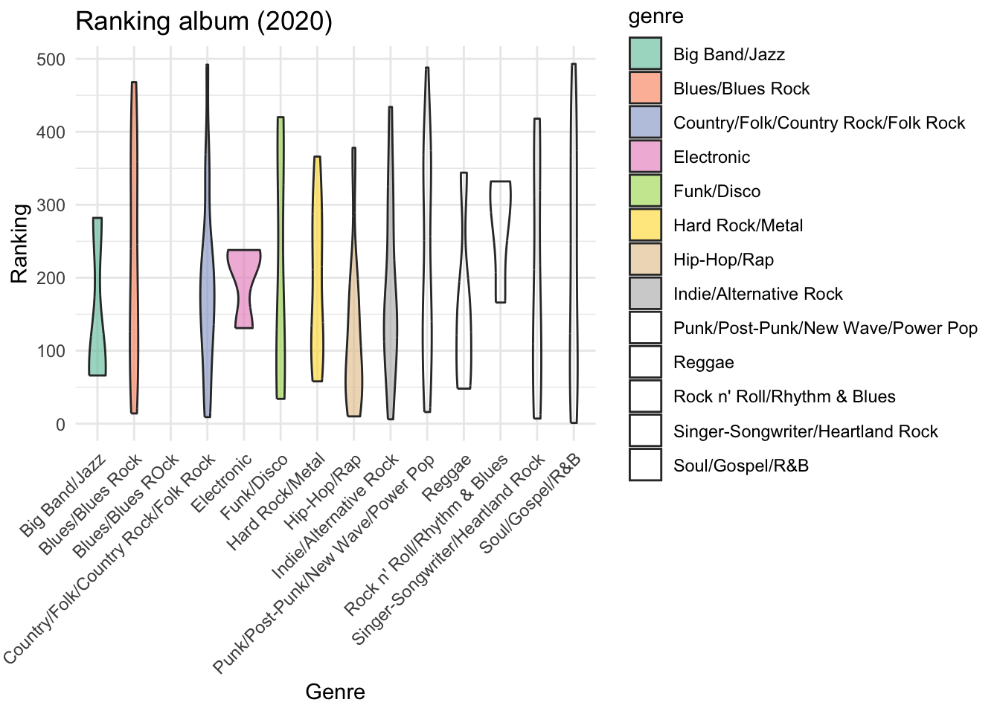
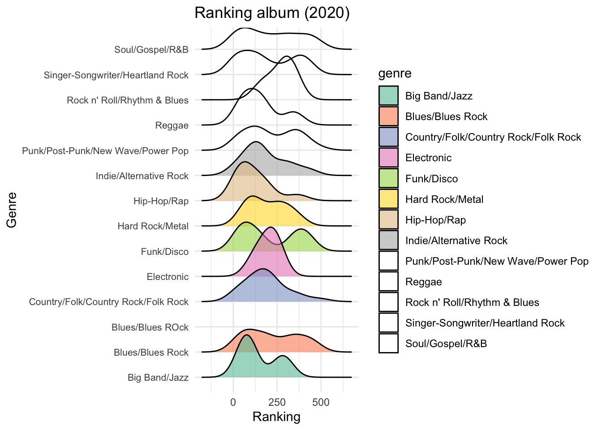
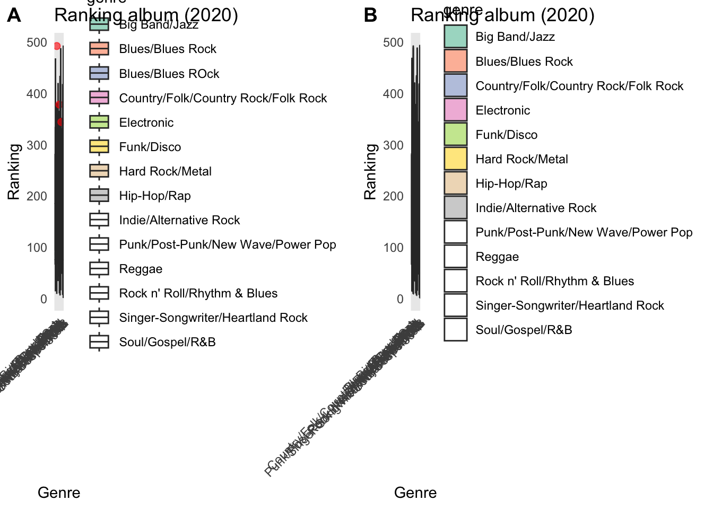

#Homewrok10
Advanced ggplotting
Nicolás Zapata
# I started by loading the necessary packages
library(tidyr)
library(ggbeeswarm)## Loading required package: ggplot2library(cowplot)
library(ggridges)
library(ggplot2)
library(tidyverse)## ── Attaching core tidyverse packages ─────────── tidyverse 2.0.0 ──
## ✔ dplyr 1.1.4 ✔ readr 2.1.5
## ✔ forcats 1.0.0 ✔ stringr 1.5.1
## ✔ lubridate 1.9.4 ✔ tibble 3.2.1
## ✔ purrr 1.0.2## ── Conflicts ───────────────────────────── tidyverse_conflicts() ──
## ✖ dplyr::filter() masks stats::filter()
## ✖ dplyr::lag() masks stats::lag()
## ✖ lubridate::stamp() masks cowplot::stamp()
## ℹ Use the conflicted package (<http://conflicted.r-lib.org/>) to force all conflicts to become errorslibrary(skimr)# I explored the available data. I will use the data from the rolling stone album rankigs.
rolling_stone <- readr::read_csv('https://raw.githubusercontent.com/rfordatascience/tidytuesday/main/data/2024/2024-05-07/rolling_stone.csv')## Rows: 691 Columns: 21
## ── Column specification ───────────────────────────────────────────
## Delimiter: ","
## chr (8): sort_name, clean_name, album, genre, type, spotify_url, artist_gen...
## dbl (13): rank_2003, rank_2012, rank_2020, differential, release_year, weeks...
##
## ℹ Use `spec()` to retrieve the full column specification for this data.
## ℹ Specify the column types or set `show_col_types = FALSE` to quiet this message.str(rolling_stone)## spc_tbl_ [691 × 21] (S3: spec_tbl_df/tbl_df/tbl/data.frame)
## $ sort_name : chr [1:691] "Sinatra, Frank" "Diddley, Bo" "Presley, Elvis" "Sinatra, Frank" ...
## $ clean_name : chr [1:691] "Frank Sinatra" "Bo Diddley" "Elvis Presley" "Frank Sinatra" ...
## $ album : chr [1:691] "In the Wee Small Hours" "Bo Diddley / Go Bo Diddley" "Elvis Presley" "Songs for Swingin' Lovers!" ...
## $ rank_2003 : num [1:691] 100 214 55 306 50 NA NA 421 NA 12 ...
## $ rank_2012 : num [1:691] 101 216 56 308 50 NA 451 420 NA 12 ...
## $ rank_2020 : num [1:691] 282 455 332 NA 227 32 33 NA 68 31 ...
## $ differential : num [1:691] -182 -241 -277 -195 -177 469 468 -80 433 -19 ...
## $ release_year : num [1:691] 1955 1955 1956 1956 1957 ...
## $ genre : chr [1:691] "Big Band/Jazz" "Rock n' Roll/Rhythm & Blues" "Rock n' Roll/Rhythm & Blues" "Big Band/Jazz" ...
## $ type : chr [1:691] "Studio" "Studio" "Studio" "Studio" ...
## $ weeks_on_billboard : num [1:691] 14 NA 100 NA 5 87 173 NA 27 NA ...
## $ peak_billboard_position : num [1:691] 2 201 1 2 13 1 2 201 30 201 ...
## $ spotify_popularity : num [1:691] 48 50 58 62 64 73 67 47 75 52 ...
## $ spotify_url : chr [1:691] "spotify:album:3GmwKB1tgPZgXeRJZSm9WX" "spotify:album:1cbtDEwxCjMhglb49OgNBR" "spotify:album:7GXP5OhYyPVLmcVfO9Iqin" "spotify:album:4kca7vXd1Wo5GE2DMafvMc" ...
## $ artist_member_count : num [1:691] 1 1 1 1 1 1 1 4 1 1 ...
## $ artist_gender : chr [1:691] "Male" "Male" "Male" "Male" ...
## $ artist_birth_year_sum : num [1:691] 1915 1928 1935 1915 1932 ...
## $ debut_album_release_year: num [1:691] 1946 1955 1956 1946 1957 ...
## $ ave_age_at_top_500 : num [1:691] 40 27 21 41 25 35 23 19 27 33 ...
## $ years_between : num [1:691] 9 0 0 10 0 13 3 0 7 8 ...
## $ album_id : chr [1:691] "3GmwKB1tgPZgXeRJZSm9WX" "1cbtDEwxCjMhglb49OgNBR" "7GXP5OhYyPVLmcVfO9Iqin" "4kca7vXd1Wo5GE2DMafvMc" ...
## - attr(*, "spec")=
## .. cols(
## .. sort_name = col_character(),
## .. clean_name = col_character(),
## .. album = col_character(),
## .. rank_2003 = col_double(),
## .. rank_2012 = col_double(),
## .. rank_2020 = col_double(),
## .. differential = col_double(),
## .. release_year = col_double(),
## .. genre = col_character(),
## .. type = col_character(),
## .. weeks_on_billboard = col_double(),
## .. peak_billboard_position = col_double(),
## .. spotify_popularity = col_double(),
## .. spotify_url = col_character(),
## .. artist_member_count = col_double(),
## .. artist_gender = col_character(),
## .. artist_birth_year_sum = col_double(),
## .. debut_album_release_year = col_double(),
## .. ave_age_at_top_500 = col_double(),
## .. years_between = col_double(),
## .. album_id = col_character()
## .. )
## - attr(*, "problems")=<externalptr>head(rolling_stone)## # A tibble: 6 × 21
## sort_name clean_name album rank_2003 rank_2012 rank_2020 differential
## <chr> <chr> <chr> <dbl> <dbl> <dbl> <dbl>
## 1 Sinatra, Frank Frank Sinatra In t… 100 101 282 -182
## 2 Diddley, Bo Bo Diddley Bo D… 214 216 455 -241
## 3 Presley, Elvis Elvis Presley Elvi… 55 56 332 -277
## 4 Sinatra, Frank Frank Sinatra Song… 306 308 NA -195
## 5 Little Richard Little Richard Here… 50 50 227 -177
## 6 Beyonce Beyonce Lemo… NA NA 32 469
## # ℹ 14 more variables: release_year <dbl>, genre <chr>, type <chr>,
## # weeks_on_billboard <dbl>, peak_billboard_position <dbl>,
## # spotify_popularity <dbl>, spotify_url <chr>, artist_member_count <dbl>,
## # artist_gender <chr>, artist_birth_year_sum <dbl>,
## # debut_album_release_year <dbl>, ave_age_at_top_500 <dbl>,
## # years_between <dbl>, album_id <chr>skimr::skim(rolling_stone) | Name | rolling_stone |
| Number of rows | 691 |
| Number of columns | 21 |
| _______________________ | |
| Column type frequency: | |
| character | 8 |
| numeric | 13 |
| ________________________ | |
| Group variables | None |
Variable type: character
| skim_variable | n_missing | complete_rate | min | max | empty | n_unique | whitespace |
|---|---|---|---|---|---|---|---|
| sort_name | 0 | 1.00 | 1 | 34 | 0 | 391 | 0 |
| clean_name | 0 | 1.00 | 1 | 34 | 0 | 386 | 0 |
| album | 0 | 1.00 | 1 | 69 | 0 | 685 | 0 |
| genre | 164 | 0.76 | 5 | 35 | 0 | 16 | 0 |
| type | 0 | 1.00 | 4 | 13 | 0 | 5 | 0 |
| spotify_url | 36 | 0.95 | 22 | 36 | 0 | 655 | 0 |
| artist_gender | 5 | 0.99 | 4 | 11 | 0 | 3 | 0 |
| album_id | 0 | 1.00 | 6 | 22 | 0 | 691 | 0 |
Variable type: numeric
| skim_variable | n_missing | complete_rate | mean | sd | p0 | p25 | p50 | p75 | p100 | hist |
|---|---|---|---|---|---|---|---|---|---|---|
| rank_2003 | 191 | 0.72 | 250.50 | 144.49 | 1 | 125.75 | 250.5 | 375.25 | 500 | ▇▇▇▇▇ |
| rank_2012 | 191 | 0.72 | 250.50 | 144.48 | 1 | 125.75 | 250.5 | 375.25 | 500 | ▇▇▇▇▇ |
| rank_2020 | 191 | 0.72 | 250.50 | 144.48 | 1 | 125.75 | 250.5 | 375.25 | 500 | ▇▇▇▇▇ |
| differential | 0 | 1.00 | -12.32 | 199.04 | -501 | -137.50 | -8.0 | 106.00 | 484 | ▂▅▇▃▂ |
| release_year | 0 | 1.00 | 1982.87 | 14.55 | 1955 | 1971.00 | 1979.0 | 1994.00 | 2019 | ▂▇▃▃▂ |
| weeks_on_billboard | 119 | 0.83 | 64.27 | 75.14 | 1 | 20.75 | 44.5 | 81.00 | 741 | ▇▁▁▁▁ |
| peak_billboard_position | 0 | 1.00 | 61.19 | 77.16 | 1 | 2.00 | 17.0 | 111.50 | 201 | ▇▁▁▁▂ |
| spotify_popularity | 37 | 0.95 | 55.81 | 14.95 | 10 | 46.00 | 57.0 | 68.00 | 91 | ▁▃▇▇▂ |
| artist_member_count | 5 | 0.99 | 2.75 | 2.02 | 1 | 1.00 | 2.0 | 4.00 | 12 | ▇▅▁▁▁ |
| artist_birth_year_sum | 5 | 0.99 | 5363.21 | 3947.13 | 1910 | 1948.00 | 3896.0 | 7845.00 | 23368 | ▇▅▁▁▁ |
| debut_album_release_year | 5 | 0.99 | 1976.87 | 14.96 | 1934 | 1966.25 | 1973.0 | 1989.00 | 2019 | ▁▇▇▅▂ |
| ave_age_at_top_500 | 5 | 0.99 | 29.61 | 9.35 | 17 | 24.04 | 27.0 | 31.00 | 88 | ▇▂▁▁▁ |
| years_between | 5 | 0.99 | 5.93 | 8.42 | 0 | 1.00 | 3.0 | 7.00 | 54 | ▇▁▁▁▁ |
# Check the data, especially the column names.
colnames(rolling_stone)## [1] "sort_name" "clean_name"
## [3] "album" "rank_2003"
## [5] "rank_2012" "rank_2020"
## [7] "differential" "release_year"
## [9] "genre" "type"
## [11] "weeks_on_billboard" "peak_billboard_position"
## [13] "spotify_popularity" "spotify_url"
## [15] "artist_member_count" "artist_gender"
## [17] "artist_birth_year_sum" "debut_album_release_year"
## [19] "ave_age_at_top_500" "years_between"
## [21] "album_id"rolling_stone_clean <- na.omit(rolling_stone)# I tested different graphs
boxplot_plot <- ggplot(rolling_stone_clean, aes(x = genre, y = rank_2020, fill = genre)) +
geom_boxplot(outlier.colour = "red", outlier.size = 2, alpha = 0.6) +
scale_fill_brewer(palette = "Set2") +
theme_minimal() +
labs(title = "Ranking album (2020)",
x = "Genre",
y = "Ranking") +
theme(axis.text.x = element_text(angle = 45, hjust = 1))
print(boxplot_plot)## Warning in RColorBrewer::brewer.pal(n, pal): n too large, allowed maximum for palette Set2 is 8
## Returning the palette you asked for with that many colors
violin_plot <- ggplot(rolling_stone_clean, aes(x = genre, y = rank_2020, fill = genre)) +
geom_violin(alpha = 0.6) +
scale_fill_brewer(palette = "Set2") +
theme_minimal() +
labs(title = "Ranking album (2020)",
x = "Genre",
y = "Ranking") +
theme(axis.text.x = element_text(angle = 45, hjust = 1))
print(violin_plot)## Warning: Groups with fewer than two datapoints have been dropped.
## ℹ Set `drop = FALSE` to consider such groups for position
## adjustment purposes.## Warning in RColorBrewer::brewer.pal(n, pal): n too large, allowed maximum for palette Set2 is 8
## Returning the palette you asked for with that many colors
library(ggridges)
ridgeline_plot <- ggplot(rolling_stone_clean, aes(y = genre, x = rank_2020, fill = genre)) +
geom_density_ridges(alpha = 0.6) +
scale_fill_brewer(palette = "Set2") +
theme_minimal() +
labs(title = "Ranking album (2020)",
x = "Ranking",
y = "Genre") +
theme(axis.text.y = element_text(size = 8))
print(ridgeline_plot)## Picking joint bandwidth of 59.4## Warning in RColorBrewer::brewer.pal(n, pal): n too large, allowed maximum for palette Set2 is 8
## Returning the palette you asked for with that many colors
combined_plot <- plot_grid(boxplot_plot, violin_plot, labels = "AUTO")## Warning in RColorBrewer::brewer.pal(n, pal): n too large, allowed maximum for palette Set2 is 8
## Returning the palette you asked for with that many colors## Warning: Groups with fewer than two datapoints have been dropped.
## ℹ Set `drop = FALSE` to consider such groups for position
## adjustment purposes.## Warning in RColorBrewer::brewer.pal(n, pal): n too large, allowed maximum for palette Set2 is 8
## Returning the palette you asked for with that many colorsprint(combined_plot)